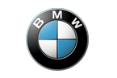
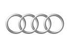
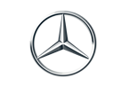
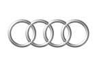
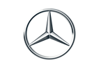
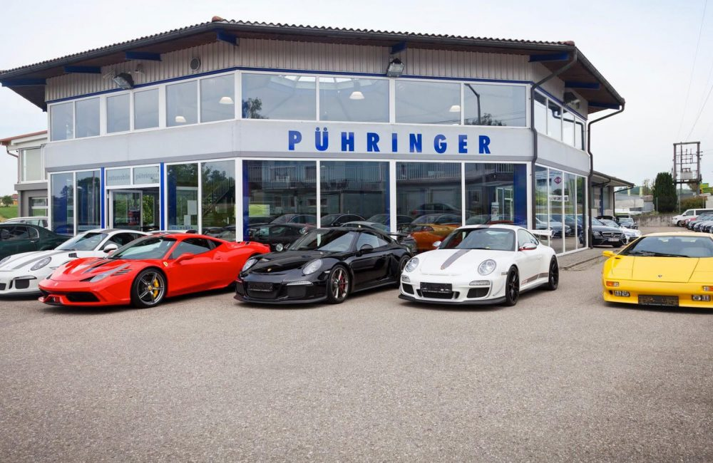

Autohaus Pühringer
Der Familienbetrieb Pühringer ist ein Unternehmen mit langjähriger Tradition, die seit 1649 beurkundet ist. Die Geschichte der Schmiede in der Leiten geht bis in das Jahr 1626 zurück. Die Schmiede muss schon zur Zeit des Bauernkrieges 1626 als Waffenschmiede fungiert haben. Die erste urkundliche Erwähnung findet sich in einer Taufmatrikel der Pfarre Peuerbach vom 3. Juli 1649. Hier wurde das Kind Jacob – ehelicher Sohn des Jörg Pieringra, Schmidt in der Leite, getauft. Der erste urkundliche Besitznachweis aus dem Jahre 1669 ist im Zunftbuch der Schmiede und Wagner zu finden. Die regelmäßigen Zunftbucheinträge lassen den Nachweis der ununterbrochenen Generationsfolge der Familie Pühringer als Schmiedemeister zu. Im Jahr 1958 wurde mit der Produktion der ersten Landmaschinen begonnen. Das traditionelle Handwerk hat sich bewährt und so entwickelte sich die Firma Pühringer zu einem renommierten Hersteller in der Landmaschinentechnik. 1985 wurde die Gebrüder Pühringer GesmbH gegründet. Günther Pühringer baute seit den frühen Achtzigerjahren den Geschäftszweig des Autohandels auf. 1998 wird das Autohaus Pühringer mit eigener Werkstätte unter der Leitung von Günther Pühringer in Peuerbach eröffnet. Am 6. April 2004 entsteht die Automobile Pühringer GmbH. 2004 wurde das Geschäftsfeld auf einen Lackier- und Karosseriefachbetrieb erweitert. Als markenunabhängiger Betrieb bietet Auto Pühringer Fahrzeuge vieler Marken und in jeder Preisklasse.
 



